# initiate the upstream tracking of the project on the GitHub repo
git remote add origin https://github.com/YourGitHUbUserName/YouGitHubRepositoryName.git
# set main as main branch (rather than master)
git branch -M main
# push content to main
git push -u origin mainData Management and Reproducibility

Introduction

This tutorial introduces basic data management techniques, version control measures, and issues relating to reproducible research.
This tutorial is designed to provide essential guidance on data management, transparency, and reproducibility for individuals working with language data. While it is accessible to all users, it focuses particularly on beginners and intermediate users of R, aiming to enhance their data management skills and utilize RStudio to make their analyses more transparent and reproducible.
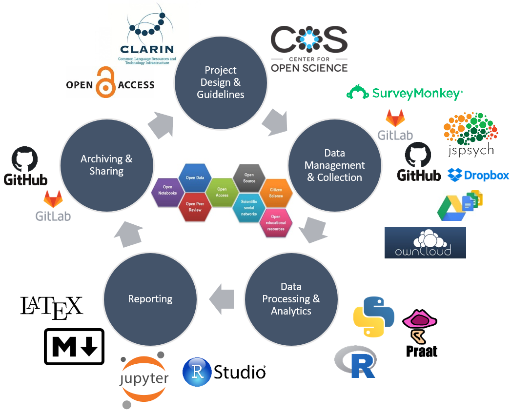
The objective of this tutorial is to demonstrate fundamental data management strategies and exemplify selected methods that improve the reproducibility of analytic workflows. By following this tutorial, users will learn to implement best practices in data management, ensure their workflows are transparent, and make their results reproducible, thereby increasing the reliability and credibility of their research.
Furthermore, the tutorial will cover essential techniques such as version control with Git, using R Markdown for creating dynamic documents, strategies for organizing and documenting your code effectively, developing interactive Jupyter notebooks, and creating eBooks that are accessible via any browser. These methods are crucial for creating analyses that others can easily understand, verify, and build upon. By adopting these practices, you contribute to a more open and collaborative scientific community.
The entire R Notebook for the tutorial can be downloaded here. If you want to render the R Notebook on your machine, i.e. knitting the document to html or a pdf, you need to make sure that you have R and RStudio installed and you also need to download the bibliography file and store it in the same folder where you store the Rmd file.
In data science or when working with data, issues relating to organizing files and folders, managing data and projects, avoiding data loss, and efficient work flows are essential. The idea behind this tutorial is to address this issue and provide advice on how to handle data and creating efficient workflows.
Some of the contents of this tutorial build on the Digital Essentials module that is offered by the UQ library, the Reproducible Research resources (created by Griffith University’s Library and eResearch Services), and on Amanda Miotto’s Reproducible Reseach Things (see also here for an alternative version and here for the GitHub repo). You can find additional information on all things relating to computers, the digital world, and computer safety in the Digital Essentials course that is part of UQ’s library resources.
Basic concepts
This section introduces some basic concepts and provides useful tips for managing your research data.
What is Data Management?
Data management refers to the comprehensive set of practices, policies, and processes used to manage data throughout its lifecycle (Corea, chap. 1). This involves ensuring that data is collected, stored, processed, and maintained in a way that it can be effectively used for analytical purposes. Good data management is crucial for enabling accurate, reliable, and meaningful analysis.
Key components of data management in data analytics include:
Data Collection and Acquisition: Gathering data from various sources, which can include databases, APIs, sensors, web scraping, and more. The goal is to ensure the data is collected in a systematic and consistent manner.
Data Storage: Utilizing databases, data warehouses, data lakes, or cloud storage solutions to store collected data securely and efficiently. This ensures that data is easily accessible for analysis.
Data Cleaning and Preparation: Involves identifying and correcting errors or inconsistencies in the data to improve its quality. This step is critical for ensuring the accuracy of any subsequent analysis.
Data Integration: Combining data from different sources into a single, unified dataset. This often involves ETL (Extract, Transform, Load) processes where data is extracted from different sources, transformed into a consistent format, and loaded into a central repository.
Data Governance: Establishing policies and procedures to ensure data is managed properly. This includes defining roles and responsibilities, ensuring data privacy and security, and maintaining compliance with regulations.
Data Security: Implementing measures to protect data from unauthorized access, breaches, and other threats. This involves encryption, access controls, and regular security audits.
Data Analysis: Using statistical methods, algorithms, and software tools to analyze data and extract meaningful insights. This can involve descriptive, predictive, and prescriptive analytics.
Data Visualization: Presenting data in graphical or pictorial formats such as charts, graphs, and dashboards to help users understand trends, patterns, and insights more easily.
Data Quality Management: Continuously monitoring and maintaining the accuracy, consistency, and reliability of data. This involves data profiling, validation, and auditing.
Metadata Management: Managing data about data, which includes documenting the data’s source, format, and usage. Metadata helps in understanding the context and provenance of the data.
Data Lifecycle Management: Managing data through its entire lifecycle, from initial creation and storage to eventual archiving and deletion. This ensures that data is managed in a way that supports its long-term usability and compliance with legal requirements.
Effective data management practices ensure that data is high quality, well-organized, and accessible, which is essential for accurate and actionable data analytics. By implementing robust data management strategies, organizations can improve the reliability of their analyses, make better-informed decisions, and achieve greater operational efficiency.
For further reading and deeper insights, consider these resources: - Data Management Association International (DAMA) - Data Management Body of Knowledge (DAMA-DMBOK) - Gartner’s Data Management Solutions
Reproducibility and Transparency
Reproducibility is a cornerstone of scientific inquiry, demanding that two analyses empirical analyses yield consistent outcomes under equivalent conditions and with comparable populations under scrutiny (Gundersen; Goodman, Fanelli, and Ioannidis). Historically, the reproducibility of scientific findings was often assumed, but this assumption has been substantially challenged by the Replication Crisis (Moonesinghe, Khoury, and Janssens; Simons). The Replication Crisis, extensively documented Ioannidis, represents an ongoing methodological quandary stemming from the failure to reproduce critical medical studies and seminal experiments in social psychology during the late 1990s and early 2000s. By the early 2010s, the crisis had extended its reach to encompass segments of the social and life sciences Diener and Biswas-Diener, significantly eroding public trust in the results of studies from the humanities and social sciences (McRae; Yong).
Below are definitions of terms relevant for distinguishing in discussions around reproducibility and transparency. This clarification is necessary to avoid misunderstandings stemming from the common conflation of similar yet different terms in this discourse.
Replication: Replication involves repeating a study’s procedure to determine if the prior findings can be reproduced. Unlike reproduction, which utilizes the same data and method, replication entails applying a similar method to different but comparable data. The aim is to ascertain if the results of the original study are robust across new data from the same or similar populations. Replication serves to advance theory by subjecting existing understanding to new evidence (Nosek and Errington; Moonesinghe, Khoury, and Janssens).
Reproduction: In contrast, reproduction (or computational replication) entails repeating a study by applying the exact same method to the exact same data (this is what McEnery and Brezina refer to as repeatability). The results should ideally be identical or highly similar to those of the original study. Reproduction relies on reproducibility, which assumes that the original study’s authors have provided sufficient information for others to replicate the study. This concept often pertains to the computational aspects of research, such as version control of software tools and environments (Nosek and Errington).
Robustness: Robustness refers to the stability of results when studies are replicated using different procedures on either the same or different yet similar data. While replication studies may yield different results from the original study due to the use of different data, robust results demonstrate consistency in the direction and size of effects across varying procedures (Nosek and Errington).
Triangulation: Recognizing the limitations of replication and reproducibility in addressing the issues highlighted by the Replication Crisis, researchers emphasize the importance of triangulation. Triangulation involves strategically employing multiple approaches to address a single research question, thereby enhancing the reliability and validity of findings (Munafò and Davey Smith).
Practical versus theoretical/formal reproducibility: This distinction distinguishes between practical and theoretical or formal reproducibility (Schweinberger). Practical reproducibility emphasizes the provision of resources by authors to facilitate the replication of a study with minimal time and effort. These resources may include notebooks, code repositories, or detailed documentation, allowing for the reproducibility of studies across different computers and software environments (Grüning et al.).
Transparency: Transparency in research entails clear and comprehensive reporting of research procedures, methods, data, and analytical techniques. It involves providing sufficient information about study design, data collection, analysis, and interpretation to enable others to understand and potentially replicate the study. Transparency is particularly relevant in qualitative and interpretive research in the social sciences, where data sharing may be limited due to ethical or copyright considerations (Moravcsik).
We now move on to some practical tips and tricks on how to implement transparent and well-documented research practices.
Organizing Projects
In this section, we focus on what researchers can do to render their workflows more transparent, recoverable, and reproducible.
A very easy-to-implement, yet powerful method for maintaining a tidy and transparent workflow relates to project management and organization. Below are some tips to consider when planning and organizing projects.
Folder Structures
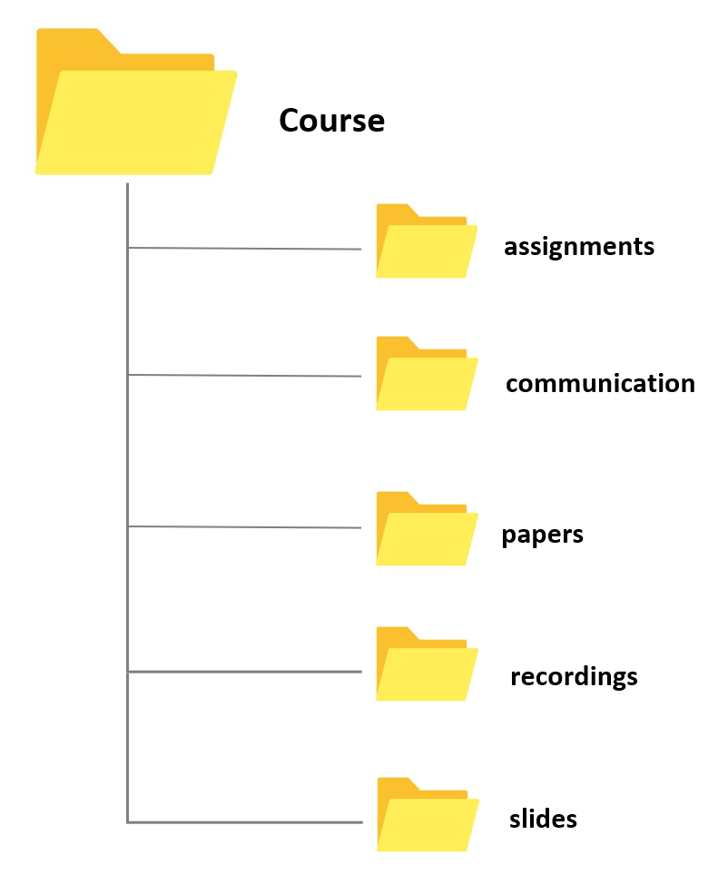
Different methods of organizing your folders have unique advantages and challenges, but they all share a reliance on a tree-structure hierarchy, where more general folders contain more specialized subfolders. For instance, if your goal is to locate any file with minimal clicks, an alphabetical folder structure might be effective. In this system, items are stored based on their initial letter (e.g., everything starting with a “T” like “travel” under “T”, or everything related to “courses” under “C”). However, this method can be unintuitive as it groups completely unrelated topics together simply because they share the same initial letter.
A more common and intuitive approach is to organize your data into meaningful categories that reflect different aspects of your life. For example:
Work: This can include subfolders like Teaching and Research.
Personal: This can encompass Rent, Finances, and Insurances.
Media: This might include Movies, Music, and Audiobooks.
This method not only makes it easier to locate files based on context but also keeps related topics grouped together, enhancing both accessibility and logical organization.
To further improve folder organization, consider the following best practices:
- Consistency: Use a consistent naming convention to avoid confusion.
- Clarity: Use clear and descriptive names for folders and files.
- Date-Based Organization: For projects that evolve over time, include dates in the folder names.
- Regular Maintenance: Periodically review and reorganize your folders to keep them tidy and relevant.
Folders and files should be labeled in a meaningful and consistent way to avoid ambiguity and confusion. Avoid generic names like Stuff or Document for folders, and doc2 or homework for files. Naming files consistently, logically, and predictably helps prevent disorganization, misplaced data, and potential project delays. A well-thought-out file naming convention ensures that files are:
- Easier to Process: Team members won’t have to overthink the file naming process, reducing cognitive load.
- Easier to Access, Retrieve, and Store: A consistent naming convention facilitates quick and easy access to files.
- Easier to Browse Through: Organized files save time and effort when searching through directories.
- Harder to Lose: A logical structure makes it less likely for files to be misplaced.
- Easier to Check for Obsolete or Duplicate Records: Systematic naming aids in identifying and managing outdated or redundant files.
The UQ Library offers the Digital Essentials module Working with Files. This module contains information on storage options, naming conventions, back up options, metadata, and file formats. Some of these issues are dealt with below but the materials provided by the library offer a more extensive introduction into these topics.
By implementing these strategies, you can create a folder structure that is not only efficient but also scalable, accommodating both your current needs and future expansions.
Folders for Research and Teaching
Having a standard folder structure can keep your files neat and tidy and save you time looking for data. It can also help if you are sharing files with colleagues and having a standard place to put working data and documentation.
Store your projects in a separate folder. For instance, if you are creating a folder for a research project, create the project folder within a separate project folder that is within a research folder. If you are creating a folder for a course, create the course folder within a courses folder within a teaching folder, etc.
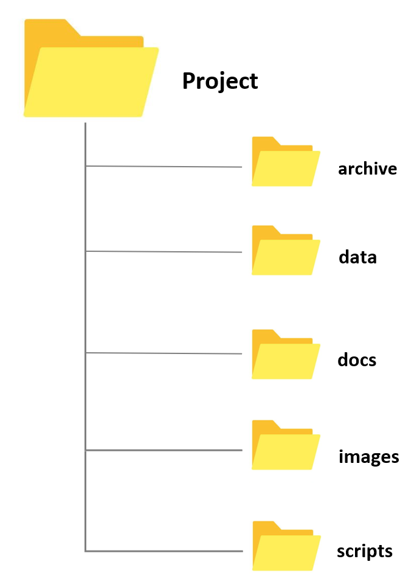
Whenever you create a folder for a new project, try to have a set of standard folders. For example, when I create research project folders, I always have folders called archive, data, docs, and images. When I create course folders, I always have folders called slides, assignments, exam, studentmaterials, and correspondence. However, you are, of course, free to modify and come up or create your own basic project design. Also, by prefixing the folder names with numbers, you can force your files to be ordered by the steps in your workflow.
- Having different sub folders allows you to avoid having too many files and many different file types in a single folder. Folders with many different files and file types tend to be chaotic and can be confusing. In addition, I have one ReadMe file on the highest level (which only contains folders except for this one single file) in which I describe very briefly what the folder is about and which folders contain which documents as well as some basic information about the folder (e.g. why and when I created it). This ReadMe file is intended both for me as a reminder what this folder is about and what it contains but also for others in case I hand the project over to someone else who continues the project or for someone who takes over my course and needs to use my materials.
File Naming Convention (FNC)
One of the most basic but also most important practices a researcher can do to improve the reproducibility and transparency of their research is to follow a consistent file naming convention. A File Naming Convention (FNC) is a systematic framework for naming your files in a way that clearly describes their contents and, importantly, how they relate to other files. Establishing an agreed-upon FNC before collecting data is essential as it ensures consistency, improves organization, and facilitates easier retrieval and collaboration. By establishing a clear and consistent File Naming Convention, you can significantly improve the efficiency and effectiveness of your data management practices, making it easier to handle, share, and preserve important information.
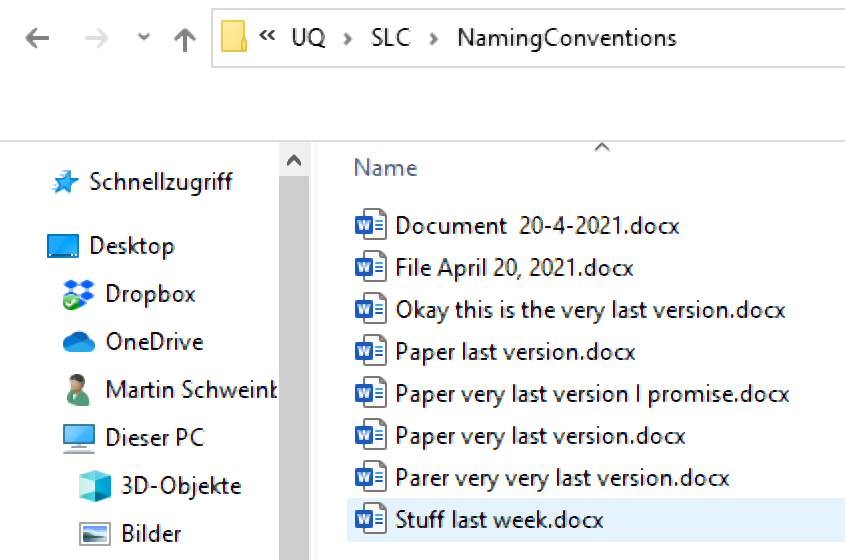
Key elements to consider when creating a File Naming Convention include:
Descriptive Names: Use clear and descriptive names that provide information about the file’s content, purpose, and date. Avoid vague or generic names.
Consistency: Apply the same naming format across all files to maintain uniformity. This includes using consistent date formats, abbreviations, and capitalization.
Version Control: Incorporate version numbers or dates in the file names to track revisions and updates. For example, “ProjectReport_v1.0_2024-05-22.docx”.
Avoid Special Characters: Use only alphanumeric characters and underscores or hyphens to avoid issues with different operating systems or software.
Length and Readability: Keep file names concise yet informative. Avoid overly long names that may be difficult to read or cause problems with file path limitations.
Organizational Context: Reflect the file’s place within the broader project or system. For example, use a prefix that indicates the department or project phase.
Example of a File Naming Convention:
[ProjectName]_[DocumentType]_[Date]_[Version].[Extension]Example:
ClimateStudy_Report_20240522_v1.0.docx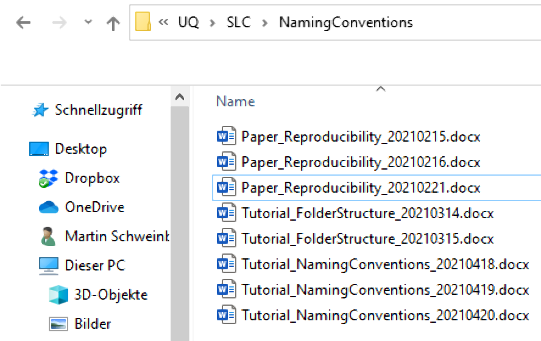
Here are some additional hints for optimizing file naming:
Avoid Special Characters: Special characters like +, !, “, -, ., ö, ü, ä, %, &, (, ), [, ], &, $, =, ?, ’, #, or / should be avoided. They can cause issues with file sharing and compatibility across different systems. While underscores (_) are also special characters, they are commonly used for readability.
No White Spaces: Some software applications replace or collapse white spaces, which can lead to problems. A common practice is to capitalize initial letters in file names to avoid white spaces (e.g., TutorialIntroComputerSkills or Tutorial_IntroComputerSkills).
Include Time-Stamps: When adding dates to file names, use the YYYYMMDD format. This format ensures that files are easily sorted in chronological order. For example, use TutorialIntroComputerSkills20230522 or Tutorial_IntroComputerSkills_20230522.
Benefits of a robust File Naming Convention include:
- Enhanced Organization: Files are easier to categorize and locate.
- Improved Collaboration: Team members can understand and navigate the file structure more efficiently.
- Consistency and Standardization: Reduces errors and confusion, ensuring that everyone follows the same system.
- Streamlined Data Management: Simplifies the process of managing large volumes of data.
For comprehensive guidance, the University of Edinburgh provides a detailed list of 13 Rules for File Naming Conventions with examples and explanations. Additionally, the Australian National Data Service (ANDS) offers a useful guide on file wrangling, summarized below.
Data Handling and Management
The following practical tips and tricks focus on data handling and provide guidance to avoid data loss.
Keeping copies and the 3-2-1 Rule
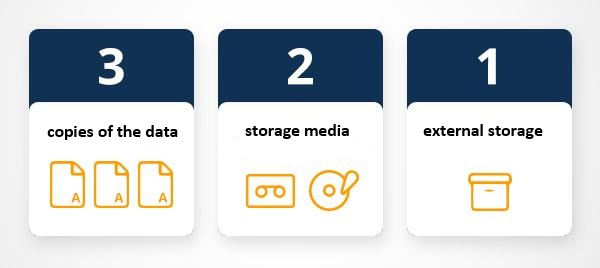
Keeping a copy of all your data (working, raw, and completed) both in the cloud (recommended) and on your computer is incredibly important. This ensures that if you experience a computer failure, accidentally delete your data, or encounter data corruption, your research remains recoverable and restorable.
When working with and processing data, it is also extremely important to always keep at least one copy of the original data. The original data should never be deleted; instead, you should copy the data and delete only sections of the copy while retaining the original data intact.
The 3-2-1 backup rule has been developed as a guide against data loss (Pratt). According to this rule, one should strive to have at least three copies of your project stored in different locations. Specifically, maintain at least three (3) copies of your data, storing backup copies on two (2) different storage media, with one (1) of them located offsite. While this guideline may vary depending on individual preferences, I personally adhere to this approach for safeguarding my projects.
on my personal notebook
on at least one additional hard drive (that you keep in a secure location)
in an online repository (for example, UQ’s Research Data Management system (RDM) OneDrive, MyDrive, GitHub, or GitLab)
Using online repositories ensures that you do not lose any data in case your computer crashes (or in case you spill lemonade over it - don’t ask…) but it comes at the cost that your data can be more accessible to (criminal or other) third parties. Thus, if you are dealing with sensitive data, I suggest to store it on an additional external hard drive and do not keep cloud-based back-ups. If you trust tech companies with your data (or think that they are not interested in stealing your data), cloud-based solutions such as OneDrive, Google’s MyDrive, or Dropbox are ideal and easy to use options (however, UQ’s RDM is a safer option).
The UQ library also offers additional information on complying with ARC and NHMRC data management plan requirements and that UQ RDM meets these requirements for sensitive data (see here).
GOING FURTHER
For Beginners
- Get your data into UQ’s RDM or Cloud Storage - If you need help, talk to the library or your tech/eResearch/QCIF Support
For Advanced backupers
- Build a policy for your team or group on where things are stored. Make sure the location of your data is saved in your documentation
Dealing with Sensitive Data
This section will elaborate on who to organize and handle (research) data and introduce some basic principles that may help you to keep your data tidy.
Tips for sensitive data
- Sensitive data are data that can be used to identify an individual, species, object, or location that introduces a risk of discrimination, harm, or unwanted attention. Major, familiar categories of sensitive data are: personal data - health and medical data - ecological data that may place vulnerable species at risk.
Separating identifying variables from your data
Separating or deidentifying your data has the purpose to protect an individual’s privacy. According to the Australian Privacy Act 1988, “personal information is deidentified if the information is no longer about an identifiable individual or an individual who is reasonably identifiable”. Deidentified information is no longer considered personal information and can be shared. More information on the Commonwealth Privacy Act can be located here.
Deidentifying aims to allow data to be used by others for publishing, sharing and reuse without the possibility of individuals/location being re-identified. It may also be used to protect the location of archaeological findings, cultural data of location of endangered species.
Any identifiers (name, date of birth, address or geospatial locations etc) should be removed from main data set and replaced with a code/key. The code/key is then preferably encrypted and stored separately. By storing deidentified data in a secure solution, you are meeting safety, controlled, ethical, privacy and funding agency requirements.
Re-identifying an individual is possible by recombining the deidentifiable data set and the identifiers.
Managing Deidentification (ARDC)
Plan deidentification early in the research as part of your data management planning
Retain original unedited versions of data for use within the research team and for preservation
Create a deidentification log of all replacements, aggregations or removals made
Store the log separately from the deidentified data files
Identify replacements in text in a meaningful way, e.g. in transcribed interviews indicate replaced text with [brackets] or use XML mark-up tags.
Management of identifiable data (ARDC)
Data may often need to be identifiable (i.e. contains personal information) during the process of research, e.g. for analysis. If data is identifiable then ethical and privacy requirements can be met through access control and data security. This may take the form of:
Control of access through physical or digital means (e.g. passwords)
Encryption of data, particularly if it is being moved between locations
Ensuring data is not stored in an identifiable and unencrypted format when on easily lost items such as USB keys, laptops and external hard drives.
Taking reasonable actions to prevent the inadvertent disclosure, release or loss of sensitive personal information.
Safely sharing sensitive data guide (ARDC)
Australian practical guidance for Deidentification (ARDC)
- Australian Research Data Commons (ARDC) formerly known as Australian National Data Service (ANDS) released a fabulous guide on Deidentification. The Deidentification guide is intended for researchers who own a data set and wish to share safely with fellow researchers or for publishing of data. The guide can be located here.
Nationally available guidelines for handling sensitive data
The Australian Government’s Office of the Australian Information Commissioner (OAIC) and CSIRO Data61 have released a Deidentification Decision Making Framework, which is a “practical guide to deidentification, focusing on operational advice”. The guide will assist organisations that handle personal information to deidentify their data effectively.
The OAIC also provides high-level guidance on deidentification of data and information, outlining what deidentification is, and how it can be achieved.
The Australian Government’s guidelines for the disclosure of health information, includes techniques for making a data set non-identifiable and example case studies.
Australian Bureau of Statistics’ National Statistical Service Handbook. Chapter 11 contains a summary of methods to maintain privacy.
med.data.edu.au gives information about anonymisation
The Office of the Information Commissioner Queensland’s guidance on deidentification techniques can be found here
Data as publications
More recently, regarding data as a form of publications has gain a lot of traction. This has the advantage that it rewards researchers who put a lot of work into compiling data and it has created an incentive for making data available, e.g. for replication. The UQ RDM and UQ eSpace can help with the process of publishing a dataset.
There are many platforms where data can be published and made available in a sustainable manner. Below are listed just some options that are recommendable:
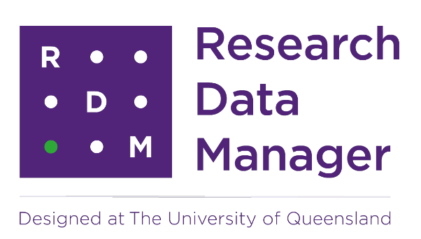
UQ Research Data Manager
The UQ Research Data Manager (RDM) system is a robust, world-leading system designed and developed here at UQ. The UQ RDM provides the UQ research community with a collaborative, safe and secure large-scale storage facility to practice good stewardship of research data. The European Commission report “Turning FAIR into Reality” cites UQ’s RDM as an exemplar of, and approach to, good research data management practice. The disadvantage of RDM is that it is not available to everybody but restricted to UQ staff, affiliates, and collaborators.
Open Science Foundation
The Open Science Foundation (OSF) is a free, global open platform to support your research and enable collaboration.
TROLLing
TROLLing | DataverseNO (The Tromsø Repository of Language and Linguistics) is a repository of data, code, and other related materials used in linguistic research. The repository is open access, which means that all information is available to everyone. All postings are accompanied by searchable metadata that identify the researchers, the languages and linguistic phenomena involved, the statistical methods applied, and scholarly publications based on the data (where relevant).
Git
GitHub offers the distributed version control using Git. While GitHub is not designed to host research data, it can be used to share share small collections of research data and make them available to the public. The size restrictions and the fact that GitHub is a commercial enterprise owned by Microsoft are disadvantages of this as well as alternative, but comparable platforms such as GitLab.
Software
Using free, open-source software for data processing and analysis, such as Praat, R, Python, or Julia, promotes transparency and reproducibility by reducing financial access barriers and enabling broader audiences to conduct analyses. Open-source tools provide a transparent and accessible framework for conducting analyses, allowing other researchers to replicate and validate results while eliminating access limitations present in commercial tools, which may not be available to researchers from low-resource regions (see Heron, Hanson, and Ricketts for a case-study on the use of free imaging software).
In contrast, employing commercial tools or multiple tools in a single analysis can hinder transparency and reproducibility. Switching between tools often requires time-consuming manual input and may disadvantage researchers from low-resource regions who may lack access to licensed software tools. While free, open-source tools are recommended for training purposes, they may have limitations in functionality (Heron, Hanson, and Ricketts, 7/36).
Documentation
Documentation involves meticulously recording your work so that others—or yourself at a later date—can easily understand what you did and how you did it. This practice is crucial for maintaining clarity and continuity in your projects. As a general rule, you should document your work with the assumption that you are instructing someone else on how to navigate your files and processes on your computer.
Efficient Documentation
Be Clear and Concise: Write in a straightforward and concise manner. Avoid jargon and complex language to ensure that your documentation is accessible to a wide audience.
Include Context: Provide background information to help the reader understand the purpose and scope of the work. Explain why certain decisions were made.
Step-by-Step Instructions: Break down processes into clear, sequential steps. This makes it easier for someone to follow your workflow.
Use Consistent Formatting: Consistency in headings, fonts, and styles improves readability and helps readers quickly find the information they need.
Document Locations and Structures: Clearly describe where files are located and the structure of your directories. Include details on how to navigate through your file system.
Explain File Naming Conventions: Detail your file naming conventions so others can understand the logic behind your organization and replicate it if necessary.
Update Regularly: Documentation should be a living document. Regularly update it to reflect changes and new developments in your project.
Example
If you were documenting a data analysis project, your documentation might include:
- Project Overview: A brief summary of the project’s objectives, scope, and outcomes.
- Directory Structure: An explanation of the folder organization and the purpose of each directory.
- Data Sources: Descriptions of where data is stored and how it can be accessed.
- Processing Steps: Detailed steps on how data is processed, including code snippets and explanations.
- Analysis Methods: An overview of the analytical methods used and the rationale behind their selection.
- Results: A summary of the results obtained and where they can be found.
- Version Control: Information on how the project is version-controlled, including links to repositories and branches.
By following these best practices, your documentation will be comprehensive and user-friendly, ensuring that anyone who needs to understand your work can do so efficiently. This level of detail not only aids in collaboration but also enhances the reproducibility and transparency of your projects.
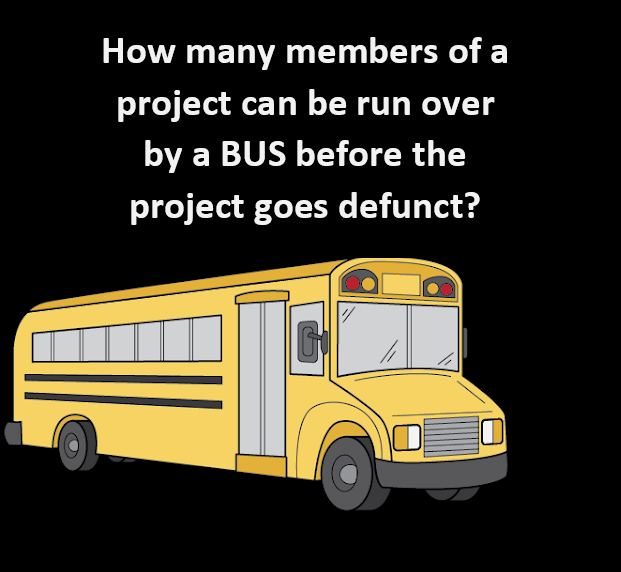
Documentation and the Bus Factor
Documentation is not just about where your results and data are saved; it encompasses a wide range of forms depending on your needs and work style. Documenting your processes can include photos, word documents with descriptions, or websites that detail how you work.
The concept of documentation is closely linked to the Bus Factor (Jabrayilzade et al.) — a measure of how many people on a project need to be unavailable (e.g., hit by a bus) for the project to fail. Many projects have a bus factor of one, meaning that if the key person is unavailable, the project halts. Effective documentation raises the bus factor, ensuring that the project can continue smoothly if someone suddenly leaves or is unavailable.
In collaborative projects, having a log of where to find relevant information and who to ask for help is particularly useful. Ideally, documentation should cover everything that a new team member needs to know. The perfect person to create this log is often the last person who joined the project, as they can provide fresh insights into what information is most needed.
Creating an Onboarding Log
If you haven’t created a log for onboarding new team members, it’s highly recommended. This log should be stored in a ReadMe document or folder at the top level of the project directory. This ensures that essential information is easily accessible to anyone who needs it.
By documenting thoroughly and effectively, you improve the resilience and sustainability of your project, making it less dependent on any single individual and enhancing its overall robustness.
GOING FURTHER
For Beginners
Read this first: How to start Documenting and more by CESSDA ERIC
Start with documenting in a text file or document- any start is a good start
Have this document automatically synced to the cloud with your data or keep this in a shared place such as Google docs, Microsoft teams, or Owncloud. If you collaborate on a project and use UQ’s RDM, you should store a copy of your documentation there.
For Intermediates
- Once you have the basics in place, go into detail on how your workflow goes from your raw data to the finished results. This can be anything from a detailed description of how you analyse your data, over R Notebooks, to downloaded function lists from Virtual Lab.
For Advanced documentarians
- Learn about Git Repositories and wikis.
Reproducible reports and notebooks
Notebooks seamlessly combine formatted text with executable code (e.g., R or Python) and display the resulting outputs, enabling researchers to trace and understand every step of a code-based analysis. This integration is facilitated by markdown, a lightweight markup language that blends the functionalities of conventional text editors like Word with programming interfaces. Jupyter notebooks (Pérez and Granger) and R notebooks (Xie) exemplify this approach, allowing researchers to interleave explanatory text with code snippets and visualize outputs within the same document. This cohesive presentation enhances research reproducibility and transparency by providing a comprehensive record of the analytical process, from code execution to output generation.
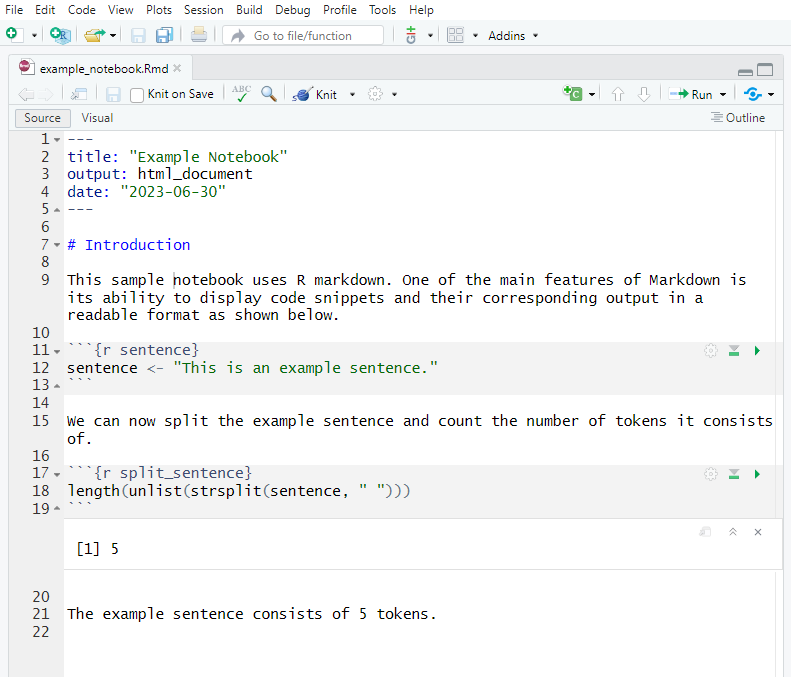
Notebooks offer several advantages for facilitating transparent and reproducible research in corpus linguistics. They have the capability to be rendered into PDF format, enabling easy sharing with reviewers and fellow researchers. This allows others to scrutinize the analysis process step by step. Additionally, the reporting feature of notebooks permits other researchers to replicate the same analysis with minimal effort, provided that the necessary data is accessible. As such, notebooks provide others with the means to thoroughly understand and replicate an analysis at the click of a button (Schweinberger and Haugh).
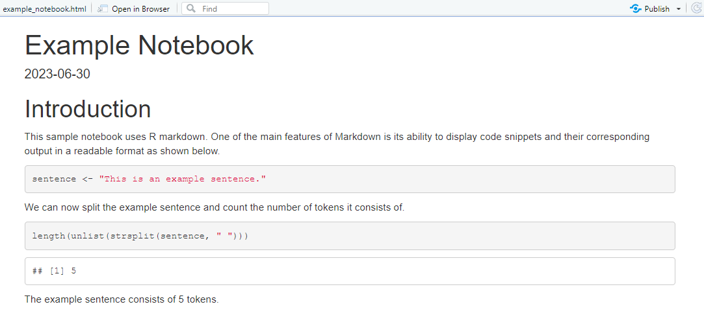
Furthermore, while notebooks are commonly used for documenting quantitative and computational analyses, recent studies have demonstrated their efficacy in rendering qualitative and interpretative work in corpus pragmatics (Schweinberger and Haugh) and corpus-based discourse analysis (see Bednarek, Schweinberger, and Lee) more transparent. Especially interactive notebooks (but also traditional, non-interactive notebooks) enhance accountability by facilitating data exploration and enabling others to verify the reliability and accuracy of annotation schemes.
Sharing notebooks offers an additional advantage compared to sharing files containing only code. While code captures the logic and instructions for analysis, it lacks the output generated by the code, such as visualizations or statistical models. Reproducing analyses solely from code necessitates specific coding expertise and replicating the software environment used for the original analysis. This process can be challenging, particularly for analyses reliant on diverse software applications, versions, and libraries, especially for researchers lacking strong coding skills. In contrast, rendered notebooks display both the analysis steps and the corresponding code output, eliminating the need to recreate the output locally. Moreover, understanding the code in the notebook typically requires only basic comprehension of coding concepts, enabling broader accessibility to the analysis process.
Version control (Git)
Implementing version control systems, such as Git, helps track changes in code and data over time. The primary issue that version control applications address is the dependency of analyses on specific versions of software applications. What may have worked and produced a desired outcome with one version of a piece of software may no longer work with another version. Thus, keeping track of versions of software packages is crucial for sustainable reproducibility. Additionally, version control extends to tracking different versions of reports or analytic steps, particularly in collaborative settings (Blischak, Davenport, and Wilson).
Version control facilitates collaboration by allowing researchers to revert to previous versions if necessary and provides an audit trail of the data processing, analysis, and reporting steps. It enhances transparency by capturing the evolution of the research project. Version control systems, such as Git, can be utilized to track code changes and facilitate collaboration (Blischak, Davenport, and Wilson).
RStudio has built-in version control and also allows direct connection of projects to GitHub repositories. GitHub is a web-based platform and service that provides a collaborative environment for software development projects. It offers version control using Git, a distributed version control system, allowing developers to track changes to their code, collaborate with others, and manage projects efficiently. GitHub also provides features such as issue tracking, code review, and project management tools, making it a popular choice for both individual developers and teams working on software projects.
Uploading and sharing resources (such as notebooks, code, annotation schemes, additional reports, etc.) on repositories like GitHub (https://github.com/) (Beer) ensures long-term preservation and accessibility, thereby ensuring that the research remains available for future analysis and verification. By openly sharing research materials on platforms like GitHub, researchers enable others to access and scrutinize their work, thereby promoting transparency and reproducibility.
Digital Object Identifier (DOI) and Persistent identifier (PiD)
Once you’ve completed your project, help make your research data discoverable, accessible and possibly re-usable using a PiD such as a DOI! A Digital Object Identifier (DOI) is a unique alphanumeric string assigned by either a publisher, organisation or agency that identifies content and provides a PERSISTENT link to its location on the internet, whether the object is digital or physical. It might look something like this http://dx.doi.org/10.4225/01/4F8E15A1B4D89.
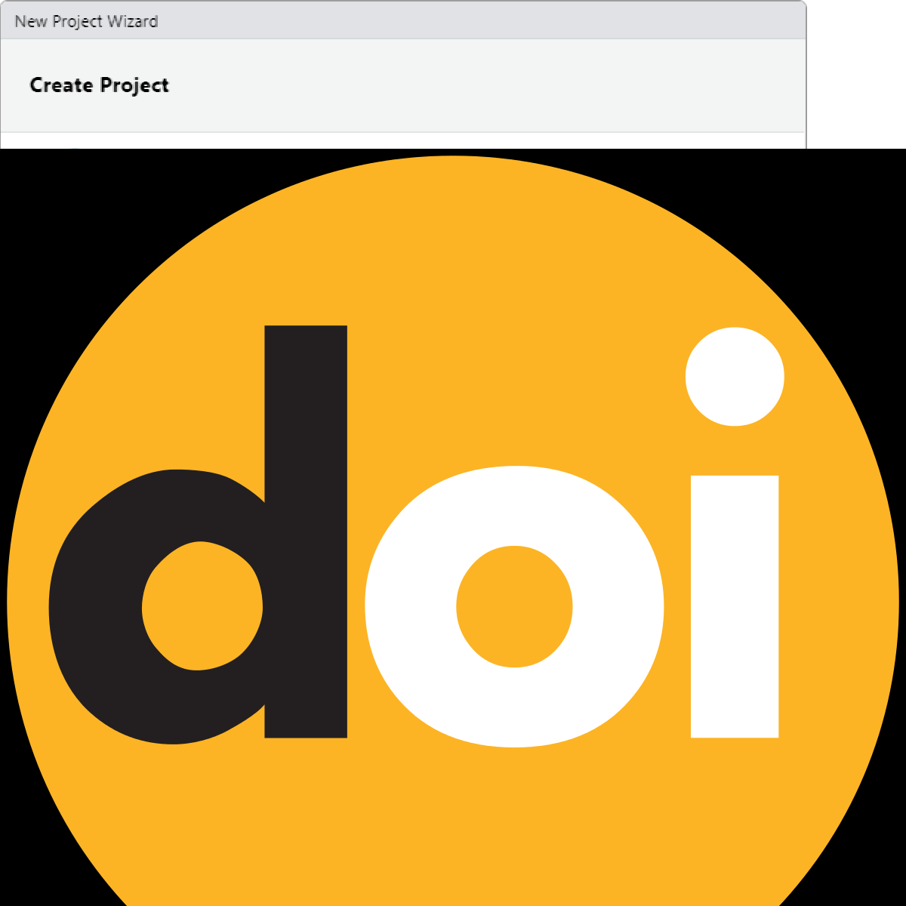
DOIs are also considered a type of persistent identifiers (PiDs). An identifier is any label used to name some thing uniquely (whether digital or physical). URLs are an example of an identifier. So are serial numbers, and personal names. A persistent identifier is guaranteed to be managed and kept up to date over a defined time period.
Journal publishers assign DOIs to electronic copies of individual articles. DOIs can also be assigned by an organisation, research institutes or agencies and are generally managed by the relevant organisation and relevant policies. DOIs not only uniquely identify research data collections, it also supports citation and citation metrics.
A DOI will also be given to any data set published in UQ eSpace, whether added manually or uploaded from UQ RDM. For information on how cite data, have a look here.
Key points
DOIs are a persistent identifier and as such carry expectations of curation, persistent access and rich metadata
DOIs can be created for DATA SETS and associated outputs (e.g. grey literature, workflows, algorithms, software etc) - DOIs for data are equivalent with DOIs for other scholarly publications
DOIs enable accurate data citation and bibliometrics (both metrics and altmetrics)
Resolvable DOIs provide easy online access to research data for discovery, attribution and reuse
GOING FURTHER
For Beginners
- Ensure data you associate with a publication has a DOI- your library is the best group to talk to for this.
For Intermediates
Learn more about how your DOI can potentially increase your citation rates by watching this 4m:51s video
Learn more about how your DOI can potentially increase your citation rate by reading the ANDS Data Citation Guide
For Advanced identifiers
Learn more about PiDs and DOIs
Contact the Library for advice on how to obtain a DOI upon project completion.
Have a look at ANDS/ARDC - Citation and Identifiers
Check out the DOI system for research data
Optimizing R Workflows
While most researchers in the language sciences are somewhat familiar with R, workshops focusing on specific tasks, such as statistical analyses in R, are increasingly common. However, workshops dedicated to general proficiency in R are rare.

When discussing ‘working in R,’ I refer to concerns surrounding reproducible and efficient workflows, session management, and adherence to formatting conventions for R code. The subsequent sections will offer guidance on optimizing workflows and enhancing research practices to foster transparency, efficiency, and reproducibility.
Rproj
If you’re utilizing RStudio, you can create a new R project, which is essentially a working directory identified by a .RProj file. When you open a project (either through ‘File/Open Project’ in RStudio or by double-clicking on the .RProj file outside of R), the working directory is automatically set to the location of the .RProj file.
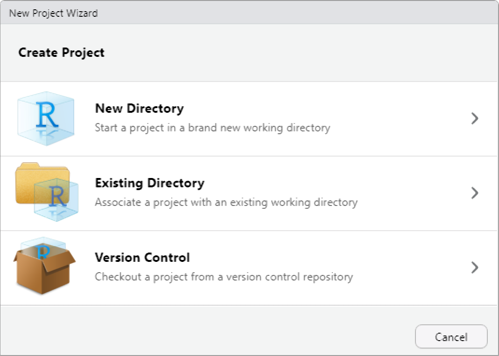
I highly recommend creating a new R Project at the outset of each research endeavor. Upon creating a new R project, promptly organize your directory by establishing folders to house your R code, data files, notes, and other project-related materials. This can be done outside of R on your computer or within the Files window of RStudio. For instance, consider creating a ‘R’ folder for your R code and a ‘data’ folder for your datasets.
Prior to adopting R Projects, I used setwd() to set my working directory. However, this method has drawbacks as it requires specifying an absolute file path, which can lead to broken scripts and hinder collaboration and reproducibility efforts. Consequently, reliance on setwd() impedes the sharing and transparency of analyses and projects. By contrast, utilizing R Projects streamlines workflow management and facilitates reproducibility and collaboration.
Dependency Control (renv)
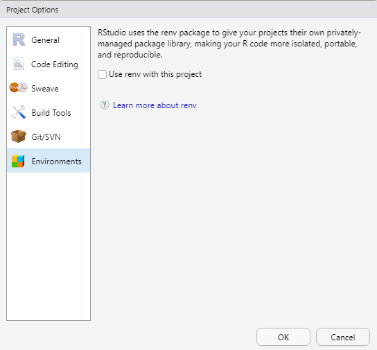
The renv package introduces a novel approach to enhancing the independence of R projects by eliminating external dependencies. By creating a dedicated library within your project, renv ensures that your R project operates autonomously from your personal library. Consequently, when sharing your project, the associated packages are automatically included.
renv aims to provide a robust and stable alternative to the packrat package, which, in my experience, fell short of expectations. Having utilized renv myself, I found it to be user-friendly and reliable. Although the initial generation of the local library may require some time, it seamlessly integrates into workflows without causing any disruptions. Overall, renv is highly recommended for simplifying the sharing of R projects, thereby enhancing transparency and reproducibility.
One of renv’s core principles is to preserve existing workflows, ensuring that they function as before while effectively isolating the R dependencies of your project, including package versioning.
For more information on renv and its functionalities, as well as guidance on its implementation, refer to the official documentation.
Version Control with Git

Getting started with Git
To connect your Rproject with GitHub, you need to have Git installed (if you have not yet downloaded and installed Git, simply search for download git in your favorite search engine and follow the instructions) and you need to have a GitHub account. If you do not have a GitHub account, here is a video tutorial showing how you can do this. If you have trouble with this, you can also check out Happy Git and GitHub for the useR at happygitwithr.com.
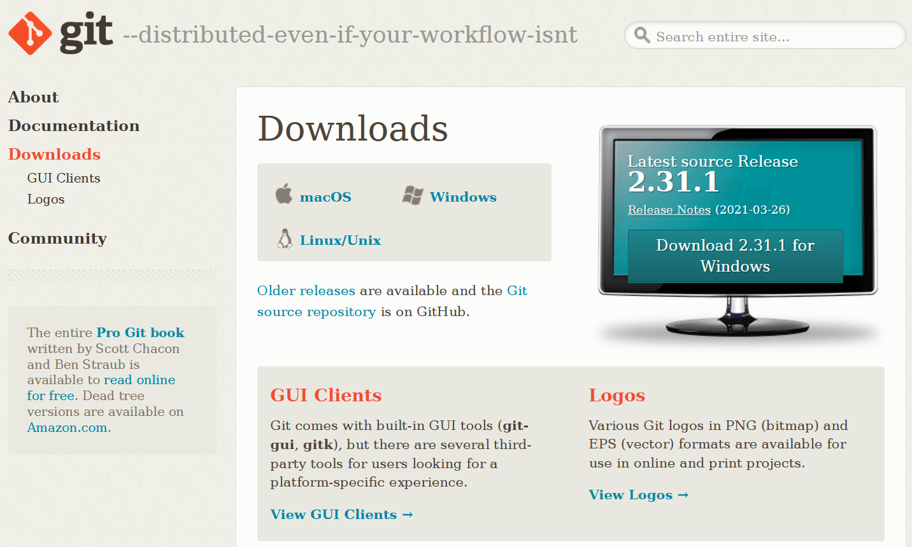
Just as a word of warning: when I set up my connection to Git and GitHUb things worked very differently, so things may be a bit different on your machine. In any case, I highly recommend this YouTube tutorial which shows how to connect to Git and GitHub using the usethis package or this, slightly older, YouTube tutorial on how to get going with Git and GitHub when working with RStudio.
Old school
While many people use the usethis package to connect RStudio to GitHub, I still use a somewhat old school way to connect my projects with GitHub. I have decided to show you how to connect RStudio to GitHub using this method, as I actually think it is easier once you have installed Git and created a gitHub account.
Before you can use Git with R, you need to tell RStudio that you want to use Git. To do this, go to Tools, then Global Options and then to Git/SVN and make sure that the box labeled Enable version control interface for RStudio projects. is checked. You need to then browse to the Git executable file (for Window’s users this is called the Git.exe file).
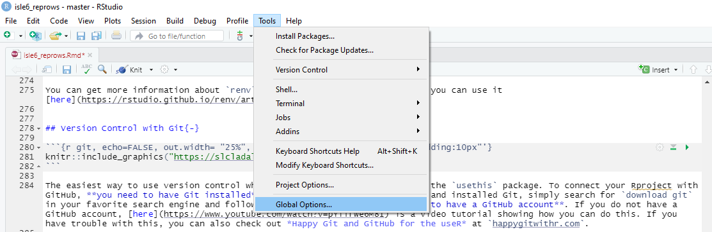
Now, we can connect our project to Git (not to GitHub yet). To do this, go to Tools, then to Project Options... and in the Git/SVN tab, change Version Control System to Git (from None). Once you have accepted these changes, a new tab called Git appears in the upper right pane of RStudio (you may need to / be asked to restart RStudio at this point). You can now commit files and changes in files to Git.
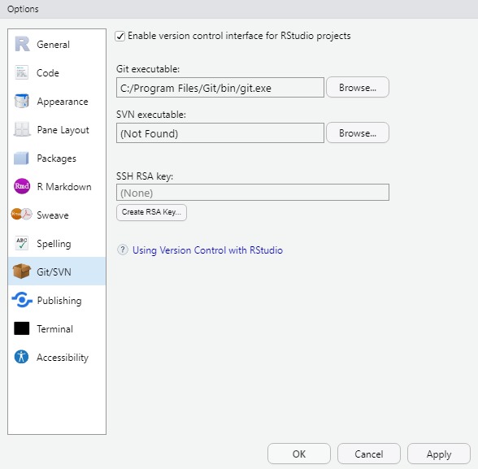
To commit files, go to the Git tab and check the boxes next to the files you would like to commit (this is called staging; meaning that these files are now ready to be committed). Then, click on Commit and enter a message in the pop-up window that appears. Finally, click on the commit button under the message window.
Connecting your Rproj with GitHub
To integrate your R project with GitHub, start by navigating to your GitHub page and create a new repository (repo). You can name it anything you like; for instance, let’s call it test. To create a new repository on GitHub, simply click on the New icon and then select New Repository. While creating the repository, I recommend checking the option to ‘Add a README’, where you can provide a brief description of the contents, although it’s not mandatory.
Once you’ve created the GitHub repo, the next step is to connect it to your local computer. This is achieved by ‘cloning’ the repository. Click on the green Code icon on your GitHub repository page, and from the dropdown menu that appears, copy the URL provided under the clone with HTTPS section.
Now, open your terminal (located between Console and Jobs in RStudio) and navigate to the directory where you want to store your project files. Use the cd command to change directories if needed. Once you’re in the correct directory, include the URL you copied from the git repository after the command git remote add origin. This sets up the connection between your local directory and the GitHub repository.
Next, execute the command git branch -M main to rename the default branch to main. This step is necessary to align with recent changes in GitHub’s naming conventions, merging the previous master and main branches.
Finally, push your local files to the remote GitHub repository by using the command git push -u origin main. This command uploads your files to GitHub, making them accessible to collaborators and ensuring version control for your project.
Following these steps ensures seamless integration between your R project and GitHub, facilitating collaboration, version control, and project management.
We can then commit changes and push them to the remote GitHub repo.
You can then go to your GitHub repo and check if the documents that we pushed are now in the remote repo.
From now on, you can simply commit all changes that you make to the GitHub repo associated with that Rproject. Other projects can, of course, be connected and push to other GitHub repos.
Solving path issues: here
The primary objective of the here package is to streamline file referencing within project-oriented workflows. Unlike the conventional approach of using setwd(), which is susceptible to fragility and heavily reliant on file organization, here leverages the top-level directory of a project to construct file paths effortlessly.
This approach significantly enhances the robustness of your projects, ensuring that file paths remain functional even if the project is relocated or accessed from a different computer. Moreover, the here package mitigates compatibility issues when transitioning between different operating systems, such as Mac and Windows, which traditionally require distinct path specifications.
# define path
example_path_full <- "D:\\Uni\\Konferenzen\\ISLE\\ISLE_2021\\isle6_reprows/repro.Rmd"
# show path
example_path_full[1] "D:\\Uni\\Konferenzen\\ISLE\\ISLE_2021\\isle6_reprows/repro.Rmd"With the here package, the path starts in folder where the Rproj file is. As the Rmd file is in the same folder, we only need to specify the Rmd file and the here package will add the rest.
# load package
library(here)
# define path using here
example_path_here <- here::here("repro.Rmd")
#show path
example_path_here[1] "/Users/laurenceanthony/Documents/projects/SLCLADAL.github.io/repro.Rmd"Reproducible randomness: set.seed
The set.seed function in R sets the seed of R‘s random number generator, which is useful for creating simulations or random objects that can be reproduced. This means that when you call a function that uses some form of randomness (e.g. when using random forests), using the set.seed function allows you to replicate results.
Below is an example of what I mean. First, we generate a random sample from a vector.
numbers <- 1:10
randomnumbers1 <- sample(numbers, 10)
randomnumbers1 [1] 4 6 3 7 8 9 10 5 2 1We now draw another random sample using the same sample call.
randomnumbers2 <- sample(numbers, 10)
randomnumbers2 [1] 10 2 9 4 1 6 8 5 7 3As you can see, we now have a different string of numbers although we used the same call. However, when we set the seed and then generate a string of numbers as show below, we create a reproducible random sample.
set.seed(123)
randomnumbers3 <- sample(numbers, 10)
randomnumbers3 [1] 3 10 2 8 6 9 1 7 5 4To show that we can reproduce this sample, we call the same seed and then generate another random sample which will be the same as the previous one because we have set the seed.
set.seed(123)
randomnumbers4 <- sample(numbers, 10)
randomnumbers4 [1] 3 10 2 8 6 9 1 7 5 4Tidy data principles
The same (underlying) data can be represented in multiple ways. The following three tables are show the same data but in different ways.
| country | continent | 2002 | 2007 |
|---|---|---|---|
| Afghanistan | Asia | 42.129 | 43.828 |
| Australia | Oceania | 80.370 | 81.235 |
| China | Asia | 72.028 | 72.961 |
| Germany | Europe | 78.670 | 79.406 |
| Tanzania | Africa | 49.651 | 52.517 |
| year | Afghanistan (Asia) | Australia (Oceania) | China (Asia) | Germany (Europe) | Tanzania (Africa) |
|---|---|---|---|---|---|
| 2002 | 42.129 | 80.370 | 72.028 | 78.670 | 49.651 |
| 2007 | 43.828 | 81.235 | 72.961 | 79.406 | 52.517 |
| country | year | continent | lifeExp |
|---|---|---|---|
| Afghanistan | 2002 | Asia | 42.129 |
| Afghanistan | 2007 | Asia | 43.828 |
| Australia | 2002 | Oceania | 80.370 |
| Australia | 2007 | Oceania | 81.235 |
| China | 2002 | Asia | 72.028 |
| China | 2007 | Asia | 72.961 |
| Germany | 2002 | Europe | 78.670 |
| Germany | 2007 | Europe | 79.406 |
| Tanzania | 2002 | Africa | 49.651 |
| Tanzania | 2007 | Africa | 52.517 |
Table 3 should be the easiest to parse and understand. This is so because only Table 3 is tidy. Unfortunately, however, most data that you will encounter will be untidy. There are two main reasons:
Most people aren’t familiar with the principles of tidy data, and it’s hard to derive them yourself unless you spend a lot of time working with data.
Data is often organised to facilitate some use other than analysis. For example, data is often organised to make entry as easy as possible.
This means that for most real analyses, you’ll need to do some tidying. The first step is always to figure out what the variables and observations are. Sometimes this is easy; other times you’ll need to consult with the people who originally generated the data. The second step is to resolve one of two common problems:
One variable might be spread across multiple columns.
One observation might be scattered across multiple rows.
To avoid structuring in ways that make it harder to parse, there are three interrelated principles which make a data set tidy:
Each variable must have its own column.
Each observation must have its own row.
Each value must have its own cell.
An additional advantage of tidy data is that is can be transformed more easily into any other format when needed.
How to minimize storage space
Most people use or rely on data that comes in spreadsheets and use software such as Microsoft Excel or OpenOffice Calc. However, spreadsheets produced by these software applications take up a lot of storage space.
One way to minimize the space, that your data takes up, is to copy the data and paste it into a simple editor or txt-file. The good thing about txt files is that they take up only very little space and they can be viewed easily so that you can open the file to see what the data looks like. You could then delete the spread sheet because you can copy and paste the content of the txt file right back into a spread sheet when you need it.
If you work with R, you may also consider to save your data as .rda files which is a very efficient way to save and story data in an R environment
Below is an example for how you can load, process, and save your data as .rda in RStudio.
# load data
lmm <- read.delim("https://slcladal.github.io/data/lmmdata.txt", header = TRUE)
# convert strings to factors
lmm <- lmm %>%
mutate(Genre = factor(Genre),
Text = factor(Text),
Region = factor(Region))
# save data
base::saveRDS(lmm, file = here::here("data", "lmm_out.rda"))
# remove lmm object
rm(lmm)
# load .rda data
lmm <- base::readRDS(file = here::here("data", "lmm_out.rda"))
# or from web
lmm <- base::readRDS(url("https://slcladal.github.io/data/lmm.rda", "rb"))
# inspect data
str(lmm)'data.frame': 537 obs. of 5 variables:
$ Date : int 1736 1711 1808 1878 1743 1908 1906 1897 1785 1776 ...
$ Genre : Factor w/ 16 levels "Bible","Biography",..: 13 4 10 4 4 4 3 9 9 3 ...
$ Text : Factor w/ 271 levels "abott","albin",..: 2 6 12 16 17 20 20 24 26 27 ...
$ Prepositions: num 166 140 131 151 146 ...
$ Region : Factor w/ 2 levels "North","South": 1 1 1 1 1 1 1 1 1 1 ...To compare, the lmmdata.txt requires 19.2KB while the lmmdata.rda only requires 5.2KB (and only 4.1KB with xz compression). If stored as an Excel spreadsheet, the same file requires 28.6KB.
Markdown

Markdown is a lightweight markup language that you can use to add formatting elements to plaintext text documents. Markdown’s simplicity and readability render it attractive for a wide range of writing and documentation tasks. Its flexibility allows it to be extended to suit more complex needs, making it a versatile tool. Created by John Gruber in 2004, its primary purpose is to allow people to write in an easy-to-read and easy-to-write plain text format, which can then be converted to structurally valid HTML (or other formats such as docx or pdf). Markdown is widely used for documentation, web writing, and content creation because of its simplicity and flexibility. Markdown provides an authoring framework for data science as Markdown can produce high quality reports that can be shared with an audience. The advantage of Markdown is that one can use a single Markdown file (or Markdown document) to combine
executable code
code output (such as visualizations and results of calculations)
plain text (to explain, report, and document)
R Markdown documents are fully reproducible and support dozens of static and dynamic output formats. Here are some key points about Markdown:
Simplicity: Markdown syntax is designed to be readable and easy to write. It avoids the complexity of other markup languages, making it accessible even for non-technical users.
Plain Text Formatting: Since Markdown is written in plain text, it can be created and edited in any text editor. This makes it highly portable and version control friendly.
Conversion: Markdown can be easily converted to HTML, making it ideal for web content. Many static site generators and content management systems support Markdown natively.
Extensibility: While the core syntax is intentionally simple, Markdown can be extended with plugins or additional syntaxes for more advanced features like tables, footnotes, and embedded content.
Common Uses of Markdown include, for example, documentation, read-me files, notes, and to-do lists because it is easy to read in its raw form and can be rendered beautifully in web browsers.
Check out this introduction to R Markdown by RStudio and have a look at this R Markdown cheat sheet.
Here’s a guide with commands on the top and their rendered output below.
Headings
Command:
# Heading 1
## Heading 2
### Heading 3
#### Heading 4
##### Heading 5
###### Heading 6Rendered:
Heading 1
Heading 2
Heading 3
Heading 4
Heading 5
Heading 6
Headings with Links
Command:
### [Heading with a Link](https://www.example.com)Rendered:
Heading with a Link
Custom IDs for Headings
Command:
### Custom ID Heading {#custom-id}Rendered:
Custom ID Heading
Table of Contents
Command:
## Table of Contents
- [Headings](#headings)
- [Blockquotes](#blockquotes)
- [Images](#images)
- [Tables](#tables)Rendered:
Table of Contents
Emphasis
Command:
*Italic text*
_Italic text_
**Bold text**
__Bold text__
***Bold and italic***
___Bold and italic___Rendered:
Italic text
Italic text
Bold text
Bold text
Bold and italic
Bold and italic
Strikethrough
Command:
This is a ~~strikethrough~~ example.Rendered:
This is a strikethrough example.
Superscript and Subscript
Command:
H~2~O and E=mc^2^Rendered:
H2O and E=mc2
Highlight
Command:
I need to ==highlight== this text.Rendered:
I need to ==highlight== this text.
Emojis
Command:
Here is an emoji: :smile:Rendered:
Here is an emoji: :smile:
Emoji Shortcodes
Command:
:smile: :+1: :sparkles:Rendered:
:smile: :+1: :sparkles:
Lists
Unordered List
Command:
- Item 1
- Item 2
- Subitem 2.1
- Subitem 2.2
- Item 3Rendered:
- Item 1
- Item 2
- Subitem 2.1
- Subitem 2.2
- Item 3
Ordered List
Command:
1. First item
2. Second item
3. Third item
1. Subitem 3.1
2. Subitem 3.2Rendered:
- First item
- Second item
- Third item
- Subitem 3.1
- Subitem 3.2
Task Lists
Command:
- [x] Completed task
- [ ] Incomplete task
- [ ] Another incomplete taskRendered:
Advanced Task Lists
Command:
- [ ] Task 1
- [x] Subtask 1
- [ ] Subtask 2
- [x] Task 2Rendered:
Definition Lists
Command:
First Term
: This is the definition of the first term.
Second Term
: This is the definition of the second term.Rendered:
- First Term
- This is the definition of the first term.
- Second Term
- This is the definition of the second term.
Nested Lists
Command:
1. First item
- Subitem 1
- Sub-subitem 1
- Subitem 2
2. Second itemRendered:
- First item
- Subitem 1
- Sub-subitem 1
- Subitem 2
- Subitem 1
- Second item
Links
Command:
[LADAL](https://ladal.edu.au)Rendered:
Images
Command:
Rendered:

Images with Links
Command:
[](https://www.example.com)Rendered:
Blockquotes
Command:
> This is a blockquote.
>
> This is a second paragraph within the blockquote.Rendered:
This is a blockquote.
This is a second paragraph within the blockquote.
Blockquotes with Multiple Paragraphs
Command:
> This is a blockquote with multiple paragraphs.
>
> This is the second paragraph in the blockquote.Rendered:
This is a blockquote with multiple paragraphs.
This is the second paragraph in the blockquote.
Code
Inline Code
Command:
`inline code`Rendered:
inline code
Code Block
Command:
```markdown
{
"firstName": "Martin",
"lastName": "Schweinberger",
"age": 43
}
```
Rendered:
{
"firstName": "John",
"lastName": "Smith",
"age": 25
}Blockquotes with Nested Elements
Command:
> ### This is a heading
> - This is a list item within a blockquote
> - Another item
>
> > This is a nested blockquoteRendered:
This is a heading
- This is a list item within a blockquote
- Another item
This is a nested blockquote
Inline HTML
Command:
<p>This is an inline HTML paragraph.</p>Rendered:
This is an inline HTML paragraph.
HTML Entities
Command:
AT&T © 2024Rendered:
AT&T © 2024
Expandable Sections (Details Tag)
Command:
<details>
<summary>Click to expand</summary>
This is the detailed content that is hidden until expanded.
</details>Rendered:
Click to expand
This is the detailed content that is hidden until expanded.Horizontal Rule
Command:
## Tables {-}
**Command:**
```markdown
| Header 1 | Header 2 |
|----------|----------|
| Cell 1 | Cell 2 |
| Cell 3 | Cell 4 |Rendered:
| Header 1 | Header 2 |
|---|---|
| Cell 1 | Cell 2 |
| Cell 3 | Cell 4 |
Advanced Tables
Command:
| Header 1 | Header 2 | Header 3 |
|----------|----------|----------|
| Row 1 Col 1 | Row 1 Col 2 | Row 1 Col 3 |
| Row 2 Col 1 | Row 2 Col 2 | Row 2 Col 3 |Rendered:
| Header 1 | Header 2 | Header 3 |
|---|---|---|
| Row 1 Col 1 | Row 1 Col 2 | Row 1 Col 3 |
| Row 2 Col 1 | Row 2 Col 2 | Row 2 Col 3 |
Footnotes
Command:
Here is a simple footnote[^1].
[^1]: This is the footnote.Rendered:
Here is a simple footnote1 (you can find it at the end/bottom of this document).
Syntax Highlighting
Command:
```python
def hello_world():
print("Hello, world!")
```
Rendered:
def hello_world():
print("Hello, world!")Math Expressions
Command:
Inline math: $E = mc^2$
Block math:
$$
\frac{a}{b} = c
$$Rendered:
Inline math: ( E = mc^2 )
Block math:
\[ \frac{a}{b} = c \]
Escaping Characters
Command:
Use the backslash to escape special characters: \*literal asterisks\*Rendered:
Use the backslash to escape special characters: *literal asterisks*
Mermaid Diagrams
Command:
```mermaid
graph TD;
A-->B;
A-->C;
B-->D;
C-->D;
**Rendered:**
```mermaid
graph TD;
A-->B;
A-->C;
B-->D;
C-->D;These additional advanced Markdown features allow you to create even more complex and sophisticated documents. Practice using these commands to further enhance your Markdown proficiency!
Generating Interactive Notebooks
Markdown documents can also serve as the basis of interactive notebooks. These notebooks are generated from a GitHub repository using a template provided by the Australian Text Analytics Platform (ATAP) and the Language Data Commons of Australia (LDaCA).
The transformation from a static to an interactive notebook involves Dockerizing the GitHub repository, essentially creating a virtual machine based on the repository’s specified parameters. Subsequently, the interactive notebook is loaded into a Binder workspace, enabling others to interact with copies of your notebook. This sounds very fancy but is, fortunately, quite easy to do. One should be aware though that once a session concludes, the copy of the notebook is closed, although you have the option to save a copy at any point.
Interactive notebooks are very versatile and serve various purposes, including the creation of teaching materials for statistics, text analytics, or programming-focused courses or classes, rendering one’s work transparent by sharing analyses with colleagues or reviewers, creating notebook-based online tools, or showcasing the implementation of computational methods. They accommodate both quantitative statistical and qualitative interpretative work.
Notably, interactive notebooks empower others to execute and edit your code, facilitating data and analysis validation.
Before generating an interactive notebook, ensure you have three essential components:
- An R project containing an Rmd file.
- An Rmd file named rmd2jupyter.Rmd.
- A GitHub account.
The Rmd file should utilize only one programming language, such as R, Python, or Julia, without mixing languages. Additionally, all necessary resources, such as data, should be accessible within the GitHub repository. It’s highly recommended to generate interactive notebooks only once a project or analysis is complete.
Now, let’s proceed with the process of generating an interactive notebook.
Preparation of the Rmd
Begin by duplicating the Rmd file. A simple convention is to append “_cb” to the filename, indicating that this version will be converted into an interactive notebook.
Unlike R Notebooks, interactive Jupyter notebooks do not utilize a YAML metadata header. Consequently, remove the YAML metadata header from the duplicated Rmd file and replace it with a first-level header to denote the notebook’s title. It’s advisable to adjust all headers in the Rmd file to maintain the original structure.
Create a separate script file to list all required packages for installation. Remove any code chunks responsible for installing packages, as Jupyter notebooks have limited options for hiding code chunks.
Converting your Rmd into a Jupyter notebook
- Open the “rmd2jupyter.Rmd” file and proceed to install and activate the “rmd2jupyter” package, which contains the necessary function for Rmd to Jupyter conversion. Since this package isn’t available via CRAN, utilize the “devtools” package for installation.
library(devtools)
devtools::install_github("mkearney/rmd2jupyter")
library(rmd2jupyter)- Once the “rmd2jupyter” package is activated, use the “rmd2jupyter” function to convert the Rmd file to a Jupyter notebook.
# Convert one notebook
rmd2jupyter::rmd2jupyter(here::here("acvqainter_cb.Rmd"))Creating a GitHub repository that connects to Binder
Log in to your GitHub account and visit: https://github.com/Australian-Text-Analytics-Platform/r-binder-template.
On the GitHub page, click on Use this template and select Create a new repository from the dropdown menu. Assign a name to the repository and optionally provide a brief description.
Open the “install.R” file and specify the packages to be pre-installed by adding commands like install.packages(“dplyr”) on separate lines.
Upload your Jupyter notebook by selecting Upload file from the drop-down menu. Additionally, if you need to create folders, create a dummy file first and specify its location as a subfolder.
Once all required packages, the Jupyter notebook, and any necessary data files are uploaded, initiate the notebook by following the provided link. Adapt the URL to point to your interactive notebook by adjusting the username, repository name, and notebook filename.
Alternatively, consider uploading your Jupyter notebook to Google Colab for sharing. However, note that Google Colab may terminate sessions if computations take too long or exceed resource limits.
Please anticipate an extended setup time for the interactive notebook’s first launch, as Docker image creation from the GitHub repository may take up to an hour for complex notebooks with numerous dependencies. Simpler notebooks typically start faster but may still require at least 10 minutes for the initial setup.
Creating Bookdown Websites
Generating webpages in RStudio and via GitHub is very easy to do and offers various options for researchers and teachers. Here, I’ll outline the process I used to create an online webscript, primarily relying on resources and documentation provided by GitHub user jtr13.
Log in to GitHub.
Click on Use this template.
On your repository’s home page, navigate to Settings. Then, go to the Pages section on the left. Under Build and Deployment, set Source to Deploy from a branch and Branch to main with /docs folder. Click Save. A box will appear above the Build and Deployment section with your book’s URL. Copy the URL.
Near “About” on the home page of your repo, click the gear button and paste your book URL into the Website field that appears on the right.
Click the green Code button and copy the HTTPS link, formatted like this:
https://github.com/[USERNAME]/[REPO NAME].git.Clone your new repo in RStudio via File -> New Project -> Version Control -> Git. Paste the link from the previous step in the Repository URL box.
In
index.Rmd, replace “YOUR TITLE HERE” with your title.In
index.Rmd, replace “YOUR NAMES HERE” with your names.In
_bookdown.yml, replace “YOUR GITHUB USERNAME” with your GitHub username in the two instances.In
_bookdown.yml, replace “YOUR GITHUB REPO” with your GitHub repo name in the two instances. Note that steps 3 and 4 provide links to the.Rmdfiles of your project for editing and viewing. Update these file paths if you move your.Rmdfiles. Once your book is rendered, test that the edit (pen) and view (eye) buttons work.In
_output.yml, change “YOUR SHORT TITLE” to a shortened version of your title. Leave the “after:” line indicating that the book was published with bookdown unchanged.Install bookdown with
install.packages("bookdown"). If you already have it, update to the latest version.Render locally with
bookdown::render_book("index.Rmd")or by clicking the Build book button in the Build tab.Use
browseURL("docs/index.html")to view your book locally or openindex.htmlin a browser.If everything looks good, commit and push all changed files to GitHub. Note that you’ll need to repeat steps 2 and 4 every time you wish to update the online book.
Edit README (GitHub or RStudio): Once you’ve completed these steps, delete the content of this README and add a brief description of your project with a link to the book URL.
Citation & Session Info
Schweinberger, Martin. 2024. Data Management and Reproducibility. Brisbane: The University of Queensland. url: https://ladal.edu.au/repro.html (Version 2024.05.22).
@manual{schweinberger2024repro,
author = {Schweinberger, Martin},
title = {Data Management, Version Control, and Reproducibility},
note = {https://ladal.edu.au/repro.html},
year = {2024},
organization = {The University of Queensland, School of Languages and Cultures},
address = {Brisbane},
edition = {2024.05.22}
}sessionInfo()R version 4.4.1 (2024-06-14)
Platform: aarch64-apple-darwin20
Running under: macOS Sonoma 14.6.1
Matrix products: default
BLAS: /Library/Frameworks/R.framework/Versions/4.4-arm64/Resources/lib/libRblas.0.dylib
LAPACK: /Library/Frameworks/R.framework/Versions/4.4-arm64/Resources/lib/libRlapack.dylib; LAPACK version 3.12.0
locale:
[1] en_US.UTF-8/en_US.UTF-8/en_US.UTF-8/C/en_US.UTF-8/en_US.UTF-8
time zone: Australia/Brisbane
tzcode source: internal
attached base packages:
[1] stats graphics grDevices utils datasets methods base
other attached packages:
[1] gapminder_1.0.0 lubridate_1.9.3 forcats_1.0.0 stringr_1.5.1
[5] dplyr_1.1.4 purrr_1.0.2 readr_2.1.5 tibble_3.2.1
[9] ggplot2_3.5.1 tidyverse_2.0.0 tidyr_1.3.1 here_1.0.1
[13] DT_0.33 kableExtra_1.4.0 knitr_1.48
loaded via a namespace (and not attached):
[1] utf8_1.2.4 generics_0.1.3 xml2_1.3.6 stringi_1.8.4
[5] hms_1.1.3 digest_0.6.37 magrittr_2.0.3 evaluate_1.0.1
[9] grid_4.4.1 timechange_0.3.0 fastmap_1.2.0 rprojroot_2.0.4
[13] jsonlite_1.8.9 fansi_1.0.6 viridisLite_0.4.2 scales_1.3.0
[17] codetools_0.2-20 cli_3.6.3 rlang_1.1.4 munsell_0.5.1
[21] withr_3.0.2 tools_4.4.1 tzdb_0.4.0 colorspace_2.1-1
[25] vctrs_0.6.5 R6_2.5.1 lifecycle_1.0.4 htmlwidgets_1.6.4
[29] pkgconfig_2.0.3 pillar_1.9.0 gtable_0.3.6 glue_1.8.0
[33] systemfonts_1.1.0 xfun_0.49 tidyselect_1.2.1 rstudioapi_0.17.1
[37] htmltools_0.5.8.1 rmarkdown_2.28 svglite_2.1.3 compiler_4.4.1 References
Anderson, C. J., S. Bahnik, M. Barnett-Cowan, F. A. Bosco, J. Chandler, C. R. Chartier, and N. Della Penna. “Response to Comment on "Estimating the Reproducibility of Psychological Science".” Science. https://doi.org/10.1126/science.aad9163.
Bednarek, Monika, Martin Schweinberger, and Kelvin Lee. “Corpus-Based Discourse Analysis: From Meta-Reflection to Accountability.” Corpus Linguistics and Linguistic Theory: Online First 0. https://doi.org/https://doi.org/10.1515/cllt-2023-0104.
Beer, Brent. Introducing GitHub: A Non-Technical Guide. O’Reilly.
Blischak, John D, Emily R Davenport, and Greg Wilson. “A Quick Introduction to Version Control with Git and GitHub.” PLoS Computational Biology, e1004668.
Collaboration, Open Science. “Estimating the Reproducibility of Psychological Science.” Science, aac4716. https://doi.org/10.1126/science.aac4716.
Corea, Francesco. An Introduction to Data: Everything You Need to Know about AI, Big Data and Data Science. Switzerland: Springer Nature Switzerland AG.
Diener, Edward, and Robert Biswas-Diener. “The Replication Crisis in Psychology.” https://nobaproject.com/modules/the-replication-crisis-in-psychology.
Goodman, S. N., D. Fanelli, and J. P. Ioannidis. “What Does Research Reproducibility Mean?” Science Translational Medicine, 341ps12. https://doi.org/10.1126/scitranslmed.aaf5027.
Grüning, Björn, John Chilton, Johannes Köster, Ryan Dale, Nicola Soranzo, Marius van den Beek,..., and Jan Taylor. “Practical Computational Reproducibility in the Life Sciences.” Cell Systems, 631–35. https://doi.org/10.1016/j.cels.2018.03.014.
Gundersen, O. E. “The Fundamental Principles of Reproducibility.” Philosophical Transactions of the Royal Society A. https://doi.org/10.1098/rsta.2020.0210.
Heron, M., V. L. Hanson, and I. Ricketts. “Open Source and Accessibility: Advantages and Limitations.” Journal of Interaction Science, 1–10.
Ioannidis, J. P. A. “Why Most Published Research Findings Are False.” PLoS Medicine, e124. https://doi.org/10.1371/journal.pmed.0020124.
Jabrayilzade, E., M. Evtikhiev, E. Tüzün, and V. Kovalenko. “Bus Factor in Practice.” In Proceedings of the 44th International Conference on Software Engineering: Software Engineering in Practice, 97–106.
McEnery, Tony, and Vaclav Brezina. Fundamental Principles of Corpus Linguistics. Cambridge University Press.
McRae, Mike. “Science’s ’Replication Crisis’ Has Reached Even the Most Respectable Journals, Report Shows.” https://www.sciencealert.com/replication-results-reproducibility-crisis-science-nature-journals.
Moonesinghe, Ramal, Muin J. Khoury, and A. Cecile J. W. Janssens. “Most Published Research Findings Are False—but a Little Replication Goes a Long Way.” PLoS Medicine, e28. https://doi.org/10.1371/journal.pmed.0040028.
Moravcsik, Andrew. “Transparency in Qualitative Research.” In SAGE Research Methods Foundations. https://doi.org/10.4135/9781526421036.
Munafò, Marcus R., and George Davey Smith. “Robust Research Needs Many Lines of Evidence.” Nature, 399–401. https://doi.org/10.1038/d41586-018-01023-3.
Nosek, Brian A., and Timothy M. Errington. “What Is Replication?” PLoS Biology, e3000691. https://doi.org/10.1371/journal.pbio.3000691.
Pérez, Fernando, and Brian Granger. “The Jupyter Notebook: A System for Interactive Computing Across Media.” ACM SIGBED Review, 55–60.
Pratt, Isaac. “Building a Data Management Plan for Your Research Project.” McMaster University.
Schweinberger, Martin. “Implications of the Replication Crisis for Corpus Linguistics – Some Suggestions to Improve Reproducibility.” In Broadening Horizons: Data-Intensive Approaches to English, edited by Mikko Laitinen and Paula Rautionaho. Cambridge University Press.
Schweinberger, Martin, and Michael Haugh. “Reproducibility and Transparency in Interpretive Corpus Pragmatics.” International Journal of Corpus Linguistics.
Simons, D. J. “The Value of Direct Replication.” Perspectives on Psychological Science, 76–80. https://doi.org/10.1177/1745691613514755.
Xie, Yihui. “R Markdown: Integrating a Reproducible Analysis Tool into Introductory Statistics.” Journal of Statistical Education, 1–12.
Yong, Ed. “Psychology’s Replication Crisis Is Running Out of Excuses. Another Big Project Has Found That Only Half of Studies Can Be Repeated. And This Time, the Usual Explanations Fall Flat.” https://www.theatlantic.com/science/archive/2018/11/psychologys-replication-crisis-real/576223/.
Footnotes
This is the footnote.↩︎